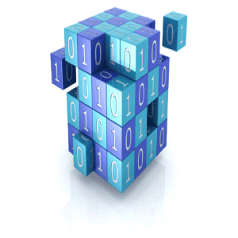
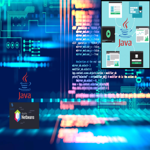

Programación orientada a objetos
La Programación Orientada a Objetos (POO) es un paradigma de programación, es decir, un modelo o un estilo de programación que nos da unas guías sobre cómo trabajar con él.
Ver más →
Fundamentos de bases de datos
Una base de datos es una recopilación organizada de información o datos estructurados, que normalmente se almacena de forma electrónica en un sistema informático. Normalmente, una base de datos está controlada por un sistema de gestión de bases de datos (DBMS).
Ver más →

Estructura de datos
En ciencias de la computación, una estructura de datos es una forma particular de organizar datos en una computadora para que puedan ser utilizados de manera eficiente.
Ver más →

Tópicos avanzados de programación
Entra en este curso y aprende el siguiente paso en la programación para conocer cómo escribir código de alto nivel, así como documentar su estructura y patrones de diseño utilizados.
Ver más →
Lenguajes de interfaz
El lenguaje de descripción de interfaz o también lenguaje de definición de interfaz es un lenguaje informático utilizado para describir la interfaz de componentes de software.
Ver más →